Product Strategy
& UX Structure
[ 01 ]
Before starting any project, I like to run stakeholder interviews to understand the business and user goals behind it. From there I define the overall structure and the minimum requirements that make the product viable. Only then do I move to the next step.
